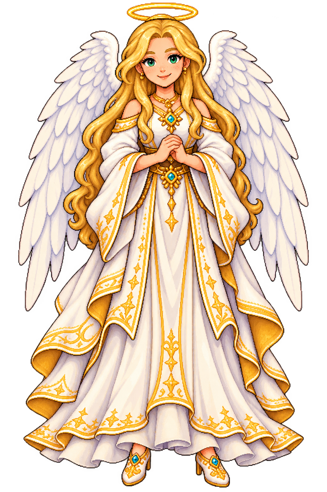
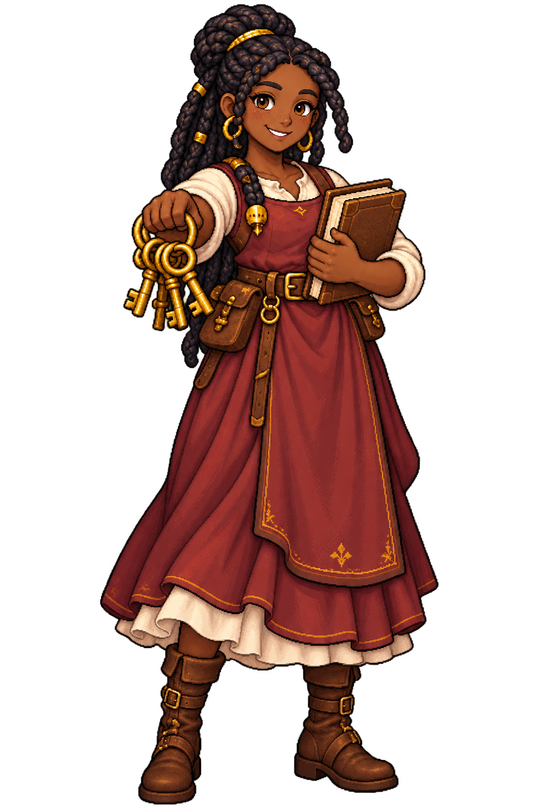
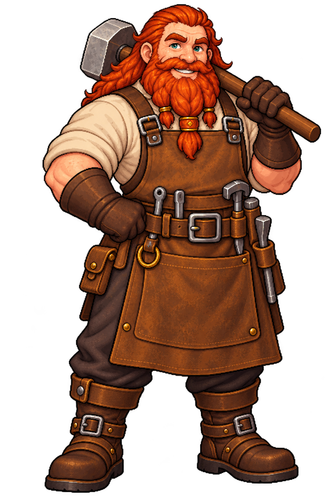
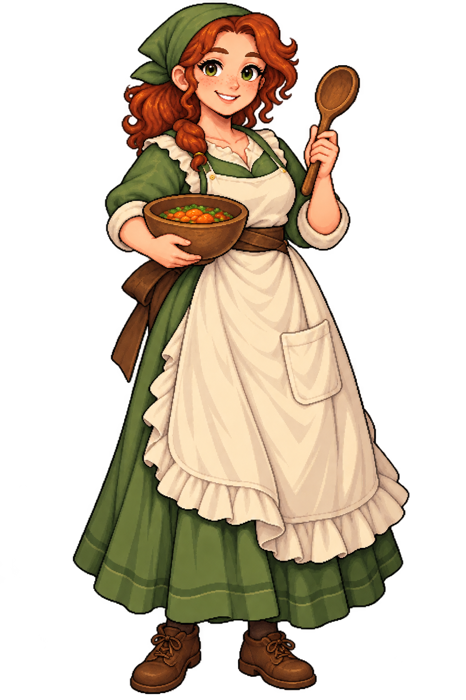
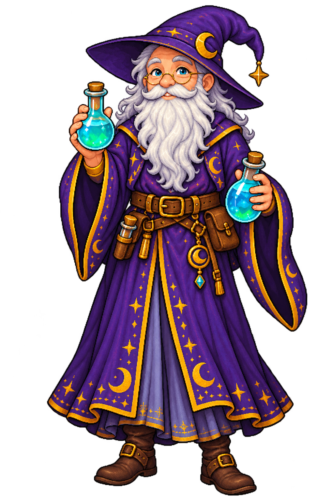
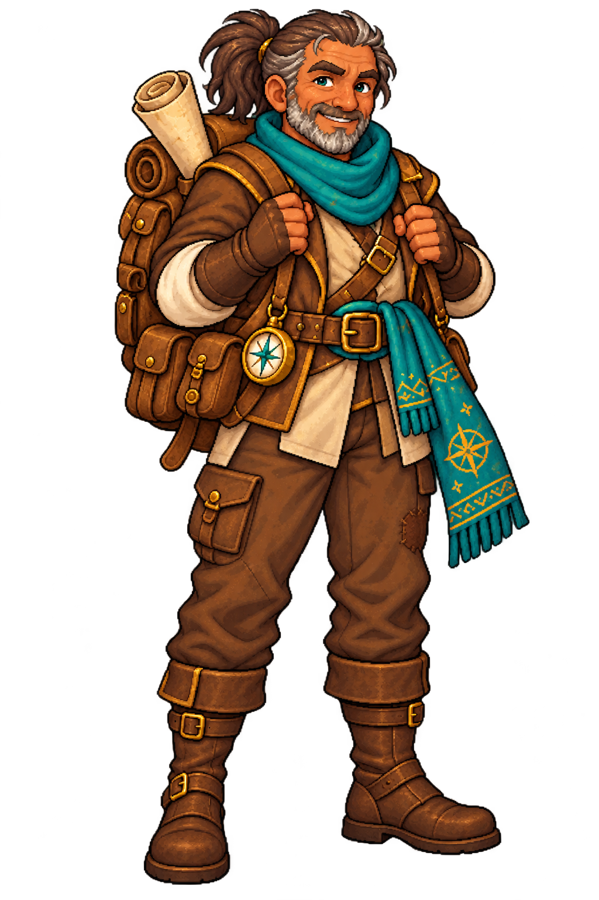

Diálogos · Iteração 27.1
Comparação para avaliação do responsável pelo projeto. Os originais foram preservados; as extensões de corpo inteiro são propostas artísticas integradas ao jogo, sem aprovação artística final presumida.
As imagens da terceira coluna são capturas reais do Electron usando as interações online existentes. O servidor de teste apenas posicionou o personagem perto de cada NPC. A transparência das artes aparece sobre o quadriculado desta página. Clique para ampliar cada arquivo.
Distribuição da interface: antes e depois
 Iteração 27 · busto a 56vh, caixa próxima da margem esquerda.
Iteração 27 · busto a 56vh, caixa próxima da margem esquerda. Iteração 27.1 · corpo inteiro a 46vh, caixa mais central e hotbar completamente oculta.
Iteração 27.1 · corpo inteiro a 46vh, caixa mais central e hotbar completamente oculta.Serafina
Original · célula de 512×512, intacta.
Extensão · PNG individual 1024×1536 com alpha. Aplicação real · diálogo online existente.
Aplicação real · diálogo online existente. Marta
Original · célula de 512×512, intacta.
Extensão · PNG individual 1024×1536 com alpha. Aplicação real · diálogo online existente.
Aplicação real · diálogo online existente. Brasa
Original · célula de 512×512, intacta.
Extensão · PNG individual 1024×1536 com alpha. Aplicação real · diálogo online existente.
Aplicação real · diálogo online existente. Lina
Original · célula de 512×512, intacta.
Extensão · PNG individual 1024×1536 com alpha. Aplicação real · diálogo online existente.
Aplicação real · diálogo online existente. Orin
Original · célula de 512×512, intacta.
Extensão · PNG individual 1024×1536 com alpha. Aplicação real · diálogo online existente.
Aplicação real · diálogo online existente. Caio
Original · célula de 512×512, intacta.
Extensão · PNG individual 1024×1536 com alpha. Aplicação real · diálogo online existente.
Aplicação real · diálogo online existente.
Controles e telas menores
 Hotbar restaurada após Concluir
Hotbar restaurada após Concluir 800×600 · redução de movimento
800×600 · redução de movimento 480×720 · composição alternativa
480×720 · composição alternativa Texto longo e alternativas · fixture técnico, sem nova quest
Texto longo e alternativas · fixture técnico, sem nova questRelatório técnico · Prompts e rastreabilidade das imagens